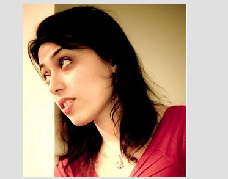

UX Researcher & HCI Specialist
I am an experienced researcher with a diverse background in User Experience (UX) research, Cognitive Science and Computer Science. During years of working as a mixed method experience researcher, I've lead numerous generative/ evaluative research initiatives where creatively triangulated various methods supporting design squads, product leads/owners, and business partners, in an agile environment. My Ph.D. in HCI/UX involved the full process of designing, developing, and evaluation of a novel system for interactive virtual humans, to facilitate an enjoyable human-like interaction (two international projects Moving Stories & Movement and Meaning) and many publications. My design research decisions are informed by 1) Vision formed by leading several studies to improve the experience of customers/ employees across banking, investing, insurance, and real estate platforms of Canada and U.S. 2) Deep understanding of human decision making process and perception developed by years of research on psychology and biology of human behavior and modeling emotion and personality. 3) Familiarity with people-centric thinking by supervising over 100 design projects. and 4) Understanding the cycle of software/ app development process as a result of strong software engineering background.